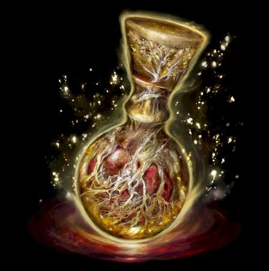

 Qui suis-je
Elden Ring est sorti sur toutes les plateformes le 25 février 2022. La date de sortie initiale du 21 janvier a été annoncée lors du Summer Game Fest 2021, et le retard a été révélé via Twitter le 18 octobre 2021.
Quel est mon but en créant ce site?
Le jeu était en production depuis le début de l'année 2017 après la sortie du DLC Ringed City pour Dark Souls 3. released. Elden Ring et Sekiro: Shadows Die Twice étaient développés simultanément par les co-directeurs des jeux. Depuis, la sortie du jeu a été plusieurs fois retardée, mais la première bande-annonce a été révélée et a été présentée lors de l'E3 2019 sans date de date de sortie officielle. Le jeu devait ensuite sortir aux alentours de novembre 2020, mais a de nouveau été retardé. Après quelques retards supplémentaires, il est finalement sorti sur toutes les plateformes le 25 février 2022. La date de sortie initiale du 21 janvier a été annoncée lors du Summer Game Fest 2021, et le retard a été révélé via Twitter le 18 octobre 2021.
Fun fact : les specs de mon pc
- CPU:
- RAM: 12 GB
- OS: Windows 11
- Carte Vidéo: Nvidia GeForce RTX 2070 Super 8GB
- Directx: Directx 12 (Feature Level 12.0)
- Stockage:
Qu'es-ce que l'ADEPT? ET QU'ES-CE QU'UN LAN?
- Mise à jour du DLC Elden Ring dans SteamDatabase: Les joueurs attendent un DLC qui sortira en juin 2024.
- Des rumeurs de jeu mobile Elden Ring par Tencent se sont apparues en ligne, à la suite d'un rapport de Reuters.
Version Beta:
10 février 2022: Classes dévoilées, Création de personnage, nouveau Gameplay, Game's HUB, Location and NPCs.
- Toutes les classes et leurs statistiques ont été révélées.
- Une carte entièrement nouvelle a été révélée.
- Le hub du jeu et de nombreux PNJ ont été dévoilés.
- De nouveaux lieux ont été révélés.
4 novembre 2021 : Dévoilement du gameplay public, ouverture des précommandes et annonce de l'édition collecteur.
- Le gameplay montre les statistiques et l'artisanat.
- La Valkyrie Boss a été nommée.
- Le boss du château de Stormveil est nommé.
- Melina est présentée.
- De nombreuses armures et armes sont présentées.
19 octobre 2021 : Jeu retardé, test en réseau fermé annoncé.
- Le test en réseau fermé se fait uniquement sur invitation.
- Le test en réseau fermé ne se fera que sur les consoles.